Authors: Jiangfan Wang, Yi-feng Yang
Type: theory · Category: strongly correlated electrons · PDF: https://arxiv.org/pdf/2606.04821v1
Analysis basis: full PDF text, analyzed in chunks
Topic relevance: Keldysh / 2PI / non-Gaussian methods 1/5 · Kondo & dissipative impurity 1/5 · analog quantum simulation 1/5
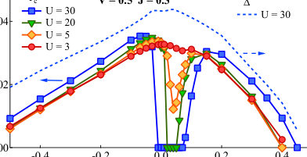
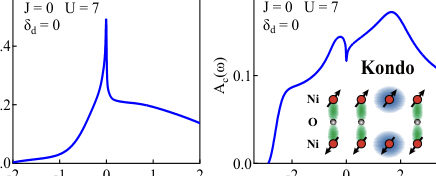
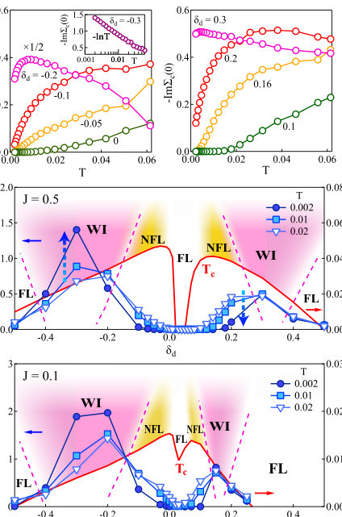
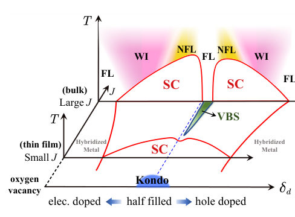
Summary. This work develops a unified theoretical model to explain the complex superconducting behavior in bilayer nickelates across different crystal structures and doping levels. By treating the interplay between $d_{z^2}$ and $d_{x^2-y^2}$ orbitals, the theory successfully accounts for multiple superconducting domes, valence bond states, and Kondo scattering. It predicts pathways to achieve high-$T_c$ superconductivity even at ambient pressure.
Why it may be interesting. The detailed treatment of orbital physics, strong correlations, and phase transitions (SC $\leftrightarrow$ VBS $\leftrightarrow$ Kondo) provides a rich theoretical playground relevant to understanding emergent quantum phases in strongly correlated materials.
Main problem. To provide a unified explanation for the similarities and distinctions in bilayer nickelate superconductivity observed in both pressurized bulk and thin films.
Main result. The theory predicts two superconducting domes upon doping, separated by a valence bond state near half filling, and suggests ambient pressure superconductivity can be achieved by tuning interlayer coupling.
Method. The authors employ a two-component theoretical model using slave-boson representations and calculate superconducting properties via the Bethe-Salpeter equation.
Model / system. The system is bilayer nickelates ($ ext{R}_3 ext{Ni}_2 ext{O}_7$), modeled using a two-orbital $t-V-U$ Hamiltonian that incorporates interlayer superexchange coupling ($J$) between $d_{z^2}$ and $d_{x^2-y^2}$ orbitals.
Key observables. Superconducting critical temperature ($T_c$), superconducting gap structure ($\Delta$), resistivity ($ ho(T)$), and self-energy ($\Sigma$).
Important parameters / regimes. Interlayer superexchange coupling ($J$), doping level ($\delta_d$), and on-site Coulomb repulsion ($U$).
Assumptions / limitations. The use of a two-component scenario and slave-boson representation to treat strong magnetic correlations.
Figures summary. Figures illustrate $T_c$ dependence on doping and coupling, the evolution of the $d_{x^2-y^2}$ spectral function across different doping regimes, and the unified phase diagram mapping SC, VBS, Kondo, FL, and WI regions.
Paper structure. The paper develops a unified theoretical framework by analyzing the interplay between $d_{z^2}$ and $d_{x^2-y^2}$ orbitals, predicting phase transitions between superconducting, valence bond, and normal metallic states based on doping and interlayer coupling strength.
The discovery of bilayer nickelate superconductivity in both pressurized bulk and thin films has drawn enormous attention on their similarity and distinction. Here we provide a unified explanation based on the two-component scenario for a number of key experimental observations reported recently. Our theory predicts two superconducting domes upon electron or hole doping, separated by a valence bond state near $d_{z^2}$ half filling for strong interlayer superexchange coupling $J$, and a single dome across half filling with a lower $T_c$ for weak or moderate $J$. Increasing doping drives the normal state from a Fermi liquid to non-Fermi liquid or weak insulating behaviors, with quasi-linear-in-$T$ scattering rate near optimal $T_c$, while breaking the interlayer valence bonds by oxygen vacancies or chemical substitution simultaneously suppresses the superconductivity and causes local Kondo scattering of $d_{x^2-y^2}$ electrons. These explain the different superconducting transitions and normal states in bulk and thin films, the effect of $d_{z^2}$ hole or electron doping, and the Kondo effect in non-superconducting samples. We propose bulk superconductivity at ambient pressure by doping or reducing the interlayer magnetic coupling and predict even higher $T_c$ upon electron doping.
Authors: Wangbo Luo, Zhonghua Qiao, Yanxiang Zhao
Type: theory · Category: numerical methods · PDF: https://arxiv.org/pdf/2606.04347v1
Analysis basis: full PDF text, analyzed in chunks
Topic relevance: methods for driven-dissipative 1/5 · non-equilibrium dynamics 1/5
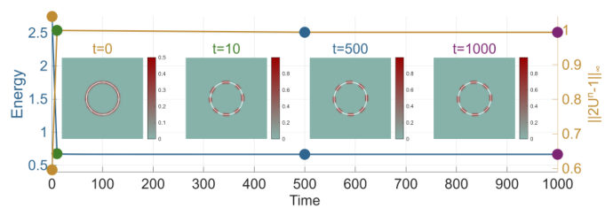
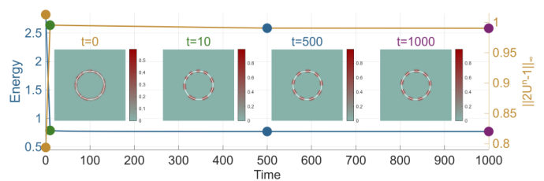
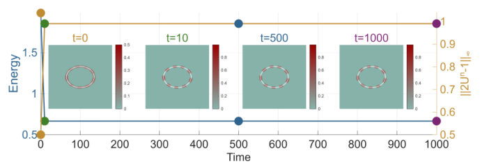
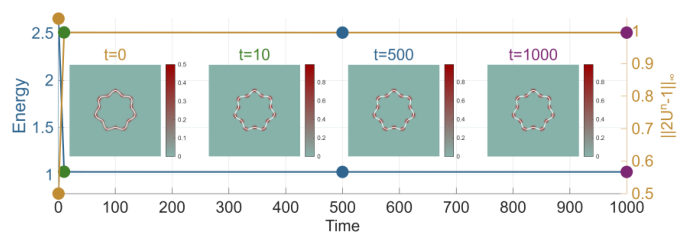
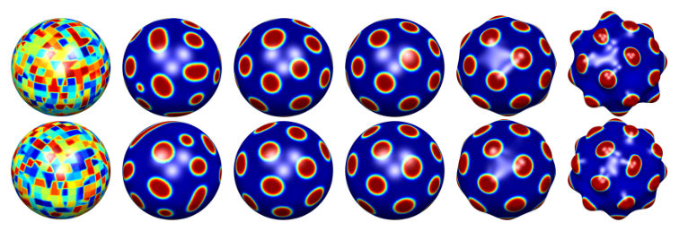
Summary. This paper introduces and analyzes Exponential Time Differencing (ETD) schemes to simulate the complex dynamics of multicomponent membranes. The authors first prove the stability of these schemes for the simplified case and then apply them to the full, coupled system governing membrane mechanics and protein segregation. This provides a robust and efficient numerical tool for studying pattern formation in biological membranes.
Why it may be interesting. While the physics is condensed matter/soft matter, the focus on developing and proving the stability of advanced time integration schemes (ETD) for stiff, coupled partial differential equations is highly relevant to computational physics.
Main problem. Developing stable, accurate, and efficient numerical schemes to simulate the complex, coupled dynamics of multicomponent membranes.
Main result. The authors rigorously prove that the developed Exponential Time Differencing (ETD) schemes satisfy the discrete maximum-bound principle and unconditional energy stability for the fixed-membrane case.
Method. The core method involves applying ETD schemes (ETD1 and ETDRK2) combined with operator splitting and spectral collocation to solve the coupled phase-field and Ohta-Kawasaki dynamics.
Model / system. The system models multicomponent membranes using a force-balance phase-field equation coupled with membrane-associated Ohta-Kawasaki (OK) dynamics for protein segregation.
Key observables. Discrete energy decay, preservation of the discrete maximum-bound principle (MBP), protein-driven pattern formation, and membrane deformation.
Important parameters / regimes. Repulsion strength ($\gamma$), biochemical strength ($\alpha$), and numerical parameters like time step ($ au$) and spatial resolution ($h$).
Assumptions / limitations. The initial rigorous analysis assumes a fixed phase-field membrane geometry; extending to the fully coupled, evolving system requires careful stabilization and splitting.
Figures summary. Numerical experiments confirm predicted temporal accuracy and energy decay for the fixed-membrane OK problem, and demonstrate stable 3D simulations of protein-driven pattern formation.
Paper structure. The work first establishes the ETD schemes and proves stability for the simplified, fixed-geometry OK problem. It then extends this framework to the full, coupled system, employing spectral methods and narrow-band techniques for efficiency.
In this paper, we develop and analyze exponential time differencing (ETD) schemes for a phase-field model of multicomponent membranes proposed in our previous work \cite{luo2025ohta}, in which membrane deformation is governed by a force-balance phase-field equation and protein segregation is described by a membrane-associated Ohta-Kawasaki (OK) dynamics. For a fixed phase-field membrane, we introduce a geometry-adapted operator splitting method based on the localization function, which reformulates the surface OK dynamics into a form suitable for ETD integration. The resulting first- and second-order ETD schemes, combined with finite-difference spatial discretization, are rigorously proved to satisfy a discrete maximum-bound principle and unconditional energy stability. For the coupled system, we construct stabilized ETD schemes in an FFT-based spectral framework, treating stiff linear terms exactly and nonlinear mechanochemical couplings explicitly. A narrow-band implementation further reduces the computational cost by restricting surface calculations to the diffuse membrane region. Numerical experiments confirm the predicted temporal accuracy, maximum-bound preservation, and energy decay for the fixed-membrane OK problem, and demonstrate stable and efficient three-dimensional simulations of protein-driven pattern formation and membrane deformation.
Authors: R. Fischer-Süßlin, R. Hartmann, T. Kandra, E. Scheer
Type: experiment · Category: other · PDF: https://arxiv.org/pdf/2606.04848v1
Analysis basis: full PDF text, analyzed in chunks
Topic relevance: analog quantum simulation 1/5 · quantum measurements 1/5
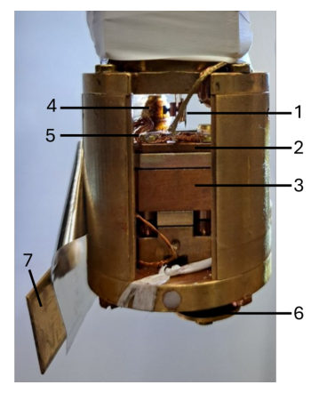
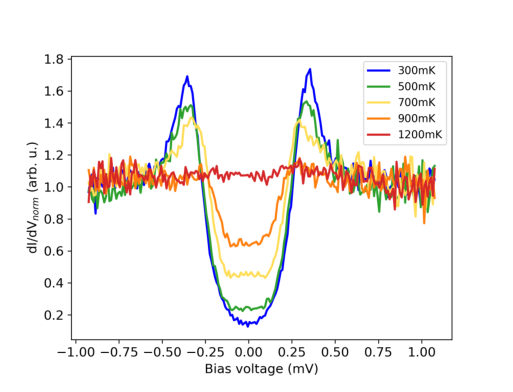
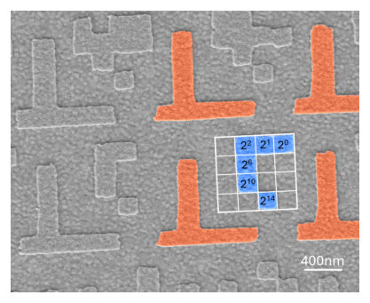
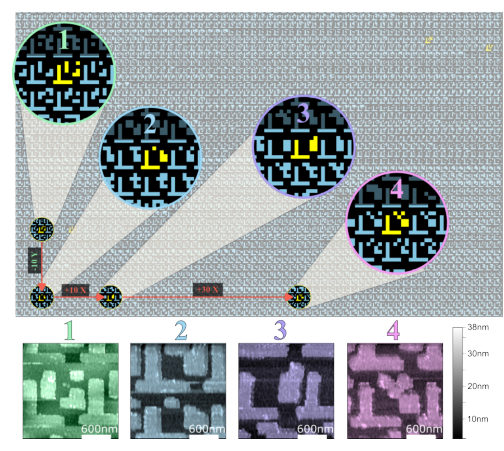
Summary. This paper presents an advanced, compact millikelvin STM setup designed for high-precision spectroscopy on nanoscale targets. It introduces a novel topography-based navigation system that uses a lithographically patterned binary grid to determine absolute coordinates across a large area. This allows researchers to reliably map and study multiple distinct quantum regions on a single sample without external optical guidance.
Why it may be interesting. While the core physics is condensed matter (superconductivity, nanoscale devices), the engineering solution for precise, low-temperature positioning is highly relevant to any experiment requiring stable, absolute addressing of quantum systems, bridging experimental physics and advanced instrumentation.
Main problem. The primary challenge is achieving precise, absolute positioning for Scanning Tunneling Microscopy (STM) and Spectroscopy (STS) on micron-scale targets while operating at millikelvin temperatures, overcoming limitations like thermal drift and lack of optical access.
Main result. The authors successfully integrated a topography-based navigation system using a lithographically patterned binary-encoded gold grid with piezoelectric nanopositioners, enabling absolute positioning across a $350 imes350 \mu ext{m}^2$ area from a single STM scan.
Method. The system uses a patterned substrate where unique 16-bit coordinates are encoded by the topography (elevated pixels = '1'). An initial STM scan reads this pattern, which is then interpreted by software to guide the nanopositioners to the desired target location for subsequent spectroscopy.
Model / system. The platform is a compact millikelvin STM operating at $\sim 270$ mK. Positioning is achieved via two piezoelectric nanopositioners, and the absolute location is read from a lithographically fabricated $4 imes4$ array of $200 ext{ nm} imes 200 ext{ nm}$ binary-encoded gold markers.
Key observables. Absolute position ($ ext{x}, ext{y}$ coordinates), differential conductance ($dI/dV$), and energy resolution (verified via BCS spectroscopy on Al).
Important parameters / regimes. Operating temperature ($\sim 270 ext{ mK}$), scan area ($350 imes350 \mu ext{m}^2$), pixel size ($200 ext{ nm}$), and energy resolution ($20 \mu ext{eV}$).
Assumptions / limitations. The system assumes stable thermal anchoring and relies on the ability of the STM tip to enter the tunneling range to read the coordinate pattern, which is noted as a potential risk.
Figures summary. Figures illustrate the STM head components, the measured $dI/dV$ spectra for Al samples, the SEM image of the fabricated navigation grid, and a schematic detailing the topography-based navigation process.
Paper structure. The paper details the physical setup (STM, nanopositioners, filtering), describes the novel topography-based navigation method using binary encoding, demonstrates the absolute positioning capability, and verifies the system's performance using spectroscopic measurements.
We present a compact millikelvin scanning tunneling microscope (STM) operating at 270mK with topographic navigation to micron-scale targets. Two piezoelectric low-temperature nanopositioners extend the accessible sample area, while a multi-stage copper powder and capillary filter scheme preserves millikelvin energy resolution, verified by BCS spectroscopy on aluminium thin films. A lithographically fabricated binary-encoded gold pattern encodes unique 16-bit coordinates in 4x4 pixels of 200nm$\times$200nm each. We demonstrate absolute positioning across a 350$\times$350$\mathrmμ$m$^2$ area from a single STM scan. Requiring only a single lithography step and no hardware modifications to existing STM setups, the navigation system provides a versatile platform for scanning tunneling spectroscopy of nanoflakes and nanoscale devices.
Authors: Mizuki Ohno, Veronica Show, Reiley Dorrian, Joseph Falson
Type: experiment · Category: other · PDF: https://arxiv.org/pdf/2606.05128v1
Analysis basis: full PDF text, analyzed in chunks
Topic relevance: analog quantum simulation 1/5
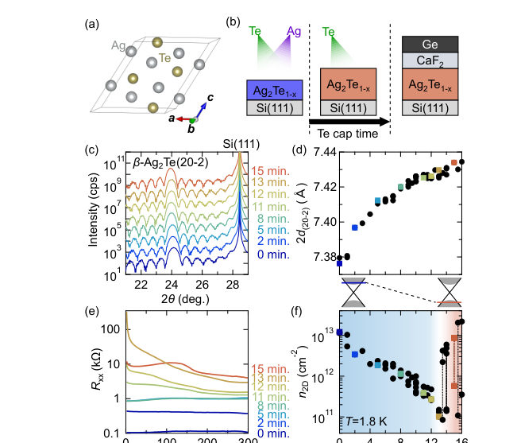
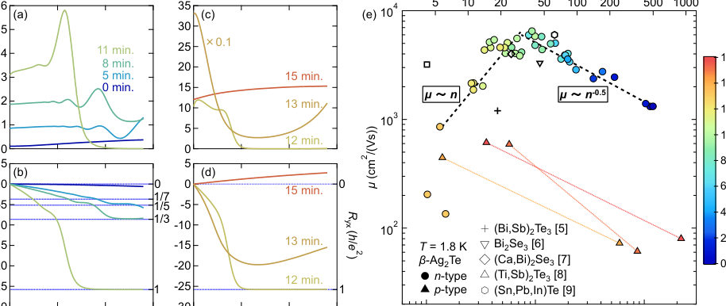
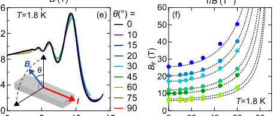
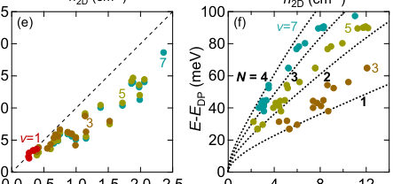
Summary. This work reports on achieving high-quality quantum Hall transport in $\beta$-Ag$_2$Te topological insulators using a novel, simple synthesis technique. By controlling stoichiometry in-situ via Te capping, the researchers suppress bulk conduction and tune the carrier density without external gates. This allowed for the clear observation of quantized Hall plateaus and confirmation of massless Dirac fermion behavior, establishing a powerful, accessible platform for studying topological quantum phenomena.
Why it may be interesting. The self-tuning, gate-free nature of the carrier control mechanism is highly relevant for realizing clean quantum states in novel materials, bypassing complex lithography or doping requirements common in quantum physics research.
Main problem. Accessing clean surface quantum transport in topological insulators is difficult due to residual bulk conduction from lattice defects.
Main result. The authors demonstrated that stoichiometry-driven vacancy engineering in $\beta$-Ag$_2$Te allows for the observation of a fully developed $\nu=1$ Quantum Hall state, confirming massless Dirac dispersion.
Method. The study uses Molecular Beam Epitaxy (MBE) combined with an in-situ Te capping step to control stoichiometry and suppress bulk defects, enabling gate-free tuning of carrier density.
Model / system. The physical system is $\beta$-Ag$_2$Te, a topological insulator exhibiting Dirac surface states. The method relies on controlling the Ag/Te stoichiometry via Te capping time to tune the Fermi level across the bulk gap.
Key observables. Quantized Hall plateaus ($\nu=1, 3, 5, 7$), Landau-level energy collapse onto $E_N \propto \sqrt{N}$, and the dependence of mobility on carrier density ($\mu$ vs. $n_{2D}$).
Important parameters / regimes. The ability to tune carrier density over an order of magnitude without external gates; the observation of odd-integer filling factors ($\nu=2N+1$).
Assumptions / limitations. The surface-state penetration depth is much smaller than the film thickness, ensuring surface state dominance; the Te capping process effectively controls donor-type defects.
Figures summary. Figures show magnetotransport measurements ($R_{xx}$ and $R_{yx}$ vs. $B$) demonstrating QHE plateaus, and plots showing the dependence of quantum parameters ($\mu$, $m_{eff}$) on carrier density ($n_{2D}$).
Paper structure. The paper establishes the problem (bulk conduction in TIs), introduces the novel MBE/vacancy engineering technique, presents magnetotransport data showing QHE and Dirac signatures, and concludes by validating this method as a versatile, gate-free approach.
Accessing surface quantum transport in topological insulators is hampered by residual bulk conduction arising from lattice defects. Here, we demonstrate a novel synthesis pathway for realizing high mobility $β$-Ag$_2$Te thin films where surface transport is dominant. An \textit{in-situ} vacancy engineering step as part of the molecular beam epitaxy growth process acts to modify the stoichiometry and suppress donor-type defects, enabling continuous tuning of the sheet carrier density over more than an order of magnitude through the charge-neutrality point without an external gate electrode. In the lower-carrier-density films, a fully developed $ν=1$ quantum Hall state is observed, and Landau-level energies extracted across samples collapse onto the $E_N=v_\mathrm{F}\sqrt{2e\hbar NB}$ relation, providing evidence for the massless Dirac dispersion of the top and bottom surface states. These results establish stoichiometry-driven vacancy engineering as a versatile lithography- and gate-free approach to accessing quantum Hall transport in epitaxial topological-insulator thin films.
Authors: Sameer Kumar Mallik, Adrian Christiansen, Saroj P. Dash
Type: experiment · Category: other · PDF: https://arxiv.org/pdf/2606.04219v1
Analysis basis: full PDF text, analyzed in chunks
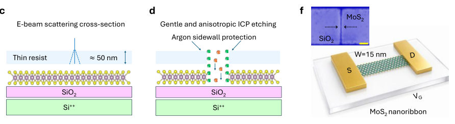
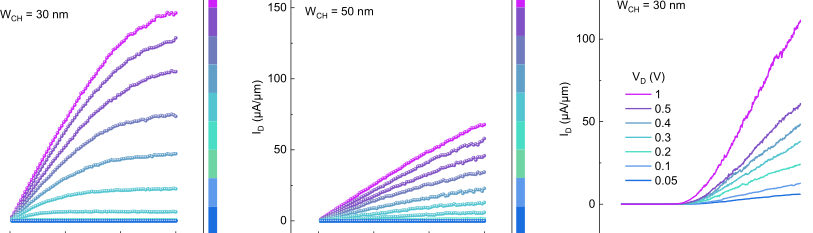
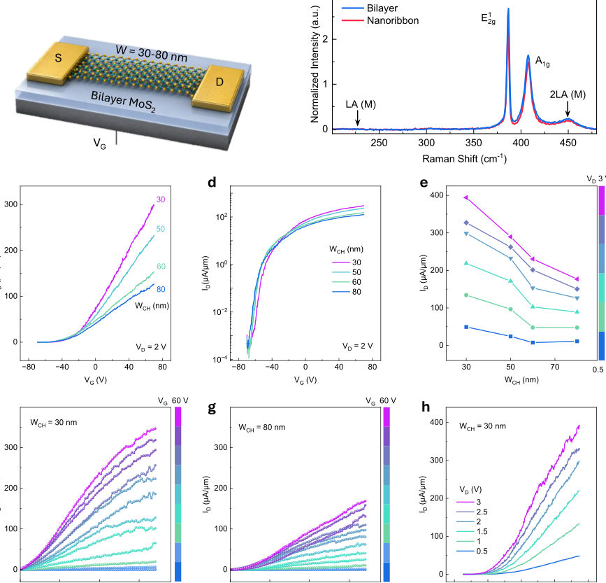
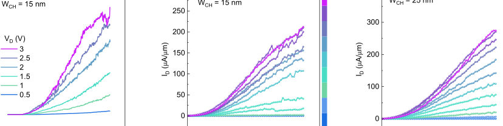
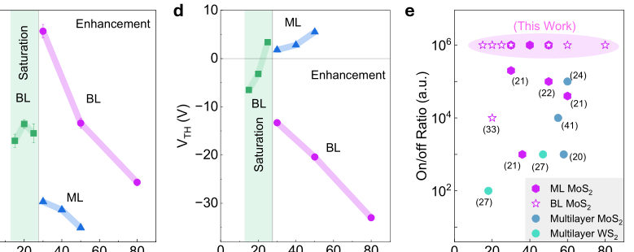
Summary. This paper reports a breakthrough in scaling high-performance transistors by utilizing atomically thin MoS2 nanoribbons down to 15 nm. Contrary to expected performance degradation, the devices show an enhancement in on-current density, suggesting an 'edge-enhanced transport regime.' This work establishes a new scaling rule for 2D semiconductors, crucial for future ultra-low-power electronics.
Why it may be interesting. While focused on solid-state electronics, the concept of achieving enhanced performance through nanoscale confinement and edge effects relates to understanding boundary conditions and quantum confinement in low-dimensional systems, which has parallels in quantum physics.
Main problem. The primary challenge addressed is overcoming the 'width-scaling wall' in transistor fabrication, where reducing channel width below 40-50 nm typically degrades performance due to edge disorder and depletion.
Main result. The study demonstrates that using atomically thin 2D semiconductor (2DSC) nanoribbons, specifically MoS2, allows for an enhancement of on-current density as the width is scaled down to 15 nm, establishing a new scaling rule.
Method. The research involves fabricating and electrically characterizing MoS2 nanoribbon transistors using advanced top-down lithography and etching techniques.
Model / system. The physical system is the atomically thin MoS2 nanoribbon transistor, tested in both monolayer and bilayer forms, fabricated on standard semiconductor substrates.
Key observables. On-current density (I_D), on/off ratios, field-effect mobility (mu_FE), and threshold voltage (V_TH) as functions of channel width.
Important parameters / regimes. Channel width (W_CH) scaled down to 15 nm; the transition from an edge-enhanced transport regime to a saturation regime.
Assumptions / limitations. The performance enhancement is attributed to an 'edge-enhanced transport regime' that mitigates traditional scaling limitations.
Figures summary. Figures illustrate the fabrication process, electrical transfer/output characteristics across various widths (e.g., 50 nm down to 15 nm), and comparative plots showing current density enhancement and mobility trends.
Paper structure. The paper progresses by first identifying the scaling bottleneck, presenting the fabrication methodology for 2DSC nanoribbons, and then systematically presenting electrical characterization data showing current enhancement and saturation at the narrowest widths.
State-of-the-art transistors have been successfully scaled the gate lengths and channel thicknesses down to 5 nm for high-performance and energy-efficient information processing. However, reducing channel width below 40-50 nm remains a bottleneck, as dangling bonds, edge disorder, and lateral depletion suppress drive current and degrade device performance. Here, we break this width-scaling wall using ultra-scaled two-dimensional semiconductor (2DSC) nanoribbon transistors down to 15 nm. In contrast to the conventional scaling rule of degradation of current density upon width scaling, our atomically-thin monolayer and bilayer molybdenum disulfide nanoribbon transistors exhibit enhancement of on-current density of up to 230% and 170%,respectively, followed by a saturation for the narrowest channels down to 15 nm. The ultra-narrow nanoribbon transistors maintain the highest on/off ratios reported so far for similar device dimensions, with improved mobility and threshold-voltage stability, indicating reduced edge scattering and depletion with a stronger electrostatic control. These findings lead to a breakthrough in width scaling rules using 2DSC nanoribbons with enhanced performance at narrower channel widths, which is promising for the ultimate scaling of transistors.
Authors: E. Katsipoulaki, N. G. Chatzarakis, E. Rigoutsou, D. Katrisioti, T. Taniguchi, K. Watanabe, S. Psilodimitrakopoulos, N. T. Pelekanos, I. Paradisanos
Type: experiment · Category: other · PDF: https://arxiv.org/pdf/2606.04675v1
Analysis basis: full PDF text, analyzed in chunks
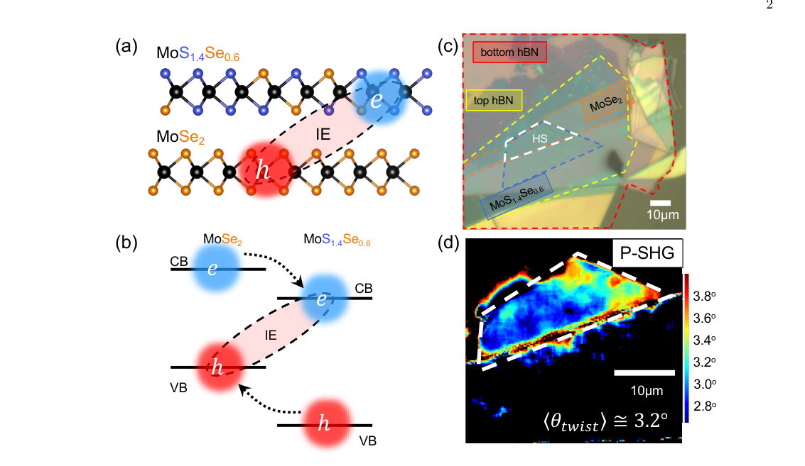
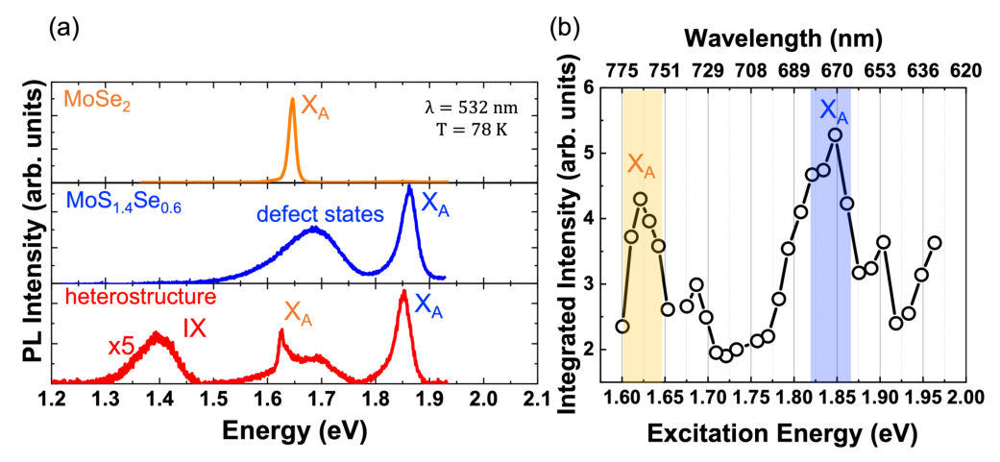
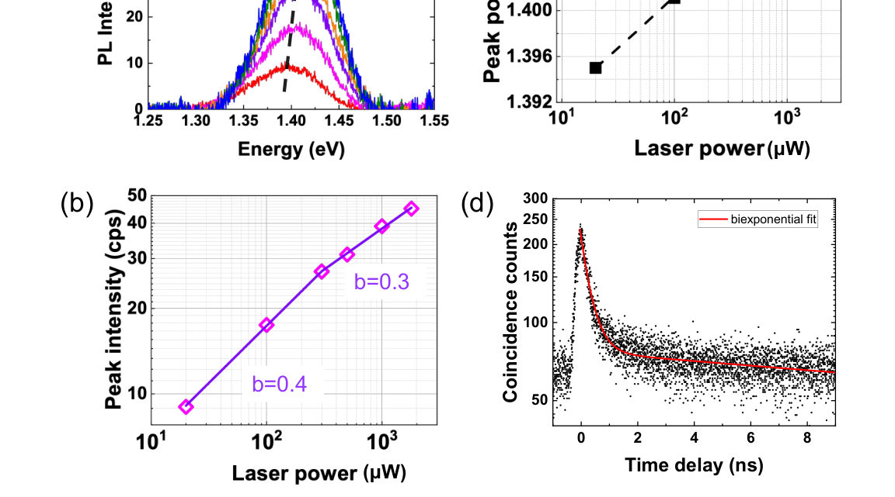
Summary. This work reports on dipolar interlayer excitons in $ ext{MoS}{1.4} ext{Se}_2$ heterobilayers. By analyzing photoluminescence and time-resolved measurements, the authors confirm the excitons' permanent dipole moment through power-dependent blueshifts. The findings establish these alloyed heterobilayers as a versatile platform for engineering and controlling dipolar excitonic interactions.}/ ext{MoSe
Why it may be interesting. The study provides experimental evidence of tunable, long-lived, dipolar excitons in van der Waals heterostructures, which are crucial components for next-generation quantum light sources and energy conversion devices.
Main problem. The study investigates the nature and dynamics of dipolar interlayer excitons (IX) formed in transition metal dichalcogenide (TMD) alloy heterobilayers.
Main result. The research confirms the existence of long-lived, spatially indirect, and dipolar interlayer excitons, establishing these alloyed heterobilayers as a tunable platform for excitonic physics.
Method. The study employs low-temperature photoluminescence (PL) spectroscopy, power-dependent PL measurements, and time-resolved PL (TRPL) to characterize the excitons.
Model / system. The physical system is a $ ext{MoS}{1.4} ext{Se}$). The system exhibits a type-II band alignment, leading to interlayer excitons with a permanent dipole moment.}/ ext{MoSe}_2$ heterobilayer encapsulated in hexagonal boron nitride ($ ext{hBN
Key observables. Distinct emission peak at $\sim 1.4 ext{ eV}$; blueshift of emission energy with increasing excitation power; biexponential decay in TRPL ($ au_1 \approx 374 ext{ ps}$, $ au_2 \approx 49 ext{ ns}$); power-law scaling of intensity ($I \propto P^b$).
Important parameters / regimes. Low temperature ($78 ext{ K}$); mean twist angle ($\approx 3.2^\circ$); excitation power dependence; two distinct exciton lifetimes.
Assumptions / limitations. The blueshift is attributed to repulsive dipole-dipole interactions, and the two TRPL components are assigned physical origins (e.g., fast component from localization/annihilation, slow component from reservoir recombination).
Figures summary. Figures illustrate the PL spectra showing the IX emission, PLE confirming excitation pathways, and power-dependent measurements showing the characteristic blueshift and power-law scaling, alongside TRPL fits yielding the two distinct decay times.
Paper structure. The paper systematically presents evidence for the IX formation (PL/PLE), confirms the dipolar nature via power-dependent blueshifts, and quantifies the dynamics using TRPL to resolve multiple recombination pathways.
Interlayer excitons in transition metal dichalcogenide (TMD) heterobilayers possess a permanent electric dipole moment and long recombination lifetimes, making them a promising platform for exploring excitonic many-body physics. Here, we report dipolar interlayer excitons in a MoS$_{1.4}$Se$_{0.6}$/MoSe$_2$ heterobilayer encapsulated in hexagonal boron nitride. Low-temperature photoluminescence measurements reveal a distinct emission peak at $\sim1.4$ eV, attributed to radiative recombination of interlayer excitons. The emission exhibits a blueshift with increasing excitation power, indicating repulsive dipole-dipole interactions. Time-resolved photoluminescence measurements uncover nanosecond-scale lifetimes, consistent with the spatial separation of electrons and holes across the two layers. These findings establish chalcogen-alloyed TMD heterobilayers as a versatile platform for engineering dipolar excitons and tuning excitonic interactions in van der Waals materials.
Authors: Wun-Hao Kang, Yu-Ting Hsiao, Jozef Genzor, Yaroslav Zhumagulov, Ming-Hao Liu, Denis Kochan
Type: theory · Category: other · PDF: https://arxiv.org/pdf/2606.04587v1
Analysis basis: full PDF text, analyzed in chunks
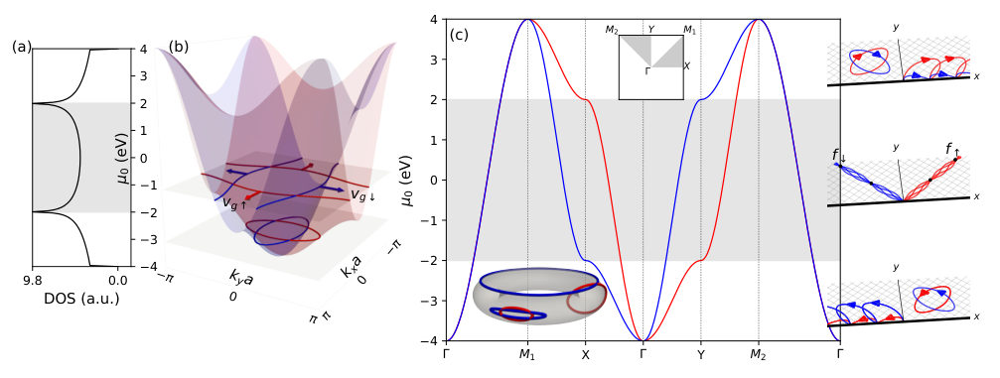
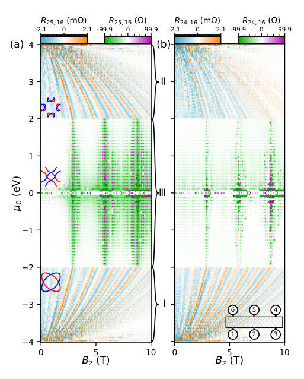
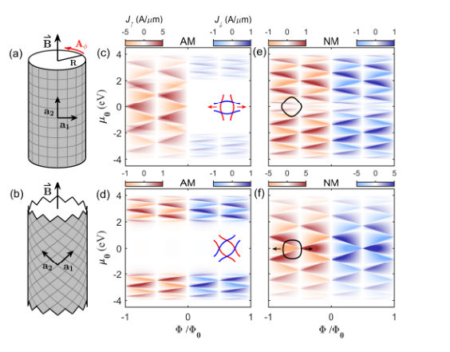
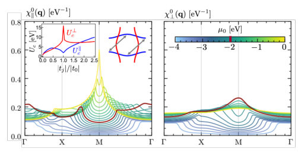
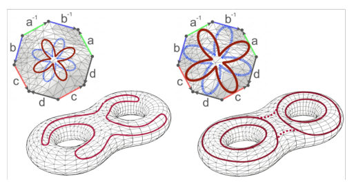
Summary. This work proposes using Lifshitz-transitioned altermagnets as a novel platform for spintronics. By tuning the doping level, the system enters an 'open-orbit' phase characterized by topologically protected, spin-selective electronic channels. This mechanism allows for the engineering of spin currents and filtering effects without requiring intrinsic ferromagnetism.
Why it may be interesting. The concept of using Fermi-surface topology (winding number) to engineer spin transport is a powerful, non-conventional mechanism for spintronics, offering an alternative to traditional magnetic or SOC-based approaches.
Main problem. Developing robust spin transport mechanisms in spintronics that bypass the need for ferromagnetic order or strong spin-orbit coupling.
Main result. Lifshitz-transitioned altermagnets create topologically protected, spin-selective open channels, enabling phenomena like perfect spin-filtering and chirality-tunable persistent spin currents.
Method. The study combines topological analysis of Fermi contours (homotopy class) with semi-classical and quantum transport simulations (Landauer-Büttiker formalism).
Model / system. The system is a two-dimensional d-wave altermagnet, whose electronic structure is governed by a tight-binding Hamiltonian. The key physics arises from the topological change (Lifshitz transition) in the spin-resolved Fermi contours.
Key observables. Open-orbit channels (non-contractible Fermi contours), non-local resistances, spin-polarized persistent currents, and spin susceptibilities ($\chi_0$).
Important parameters / regimes. Chemical potential ($\mu_0$) tuning across the Lifshitz transition, perpendicular magnetic field ($B_z$), and interaction strength ($U$).
Assumptions / limitations. The analysis relies on the topological protection afforded by Fermi-surface winding, and transport calculations are performed at zero temperature ($T=0$ K) or include finite-size/disorder corrections.
Figures summary. Figures illustrate the evolution of Fermi contours across the Lifshitz transition, the resulting perpendicular spin-separated trajectories in a magnetic field, and the dependence of persistent currents on chirality.
Paper structure. The paper systematically analyzes the topological transition in the altermagnet band structure, predicts three key magneto-transport signatures (lensing, filtering, PC), and details the theoretical framework using Hamiltonian modeling and quantum transport simulations.
Altermagnets offer a unique venue for spin transport due to their vanishing net magnetization and momentum-dependent spin splitting. We demonstrate that a homotopic Lifshitz transition in two-dimensional altermagnets creates a regime where carriers are confined to geometrically protected, spin-selective open channels. These channels originate from non-contractible Fermi contours and act as metallic analogues of topological edge modes: they are sharply directional, spin-pure, and protected by Fermi-surface winding rather than an energy gap or boundary confinement. We predict three striking magneto-transport signatures of such topologically reconfigured altermagnets: open-orbit focusing with perfect lensing and retroreflection, high-efficiency magnetic spin filtering, and chirality-tunable spin persistent currents in altermagnetic nanotubes. Our results establish altermagnets as a platform where Fermi-surface winding directly engineers spin transport, bypassing the requirements for ferromagnetism or strong spin-orbit coupling. These findings identify Lifshitz-transitioned altermagnets as a route to topology-enabled spintronics that transcends the limitations of conventional edge-state paradigms.
Authors: Eemil Praks, Libin Wang, Yu-Cheng Chang, Renan P. Loreto, Mika Prunnila, Joonas T. Peltonen, Jukka P. Pekola
Type: experiment · Category: statistical mechanics · PDF: https://arxiv.org/pdf/2606.04147v1
Analysis basis: full PDF text, analyzed in chunks
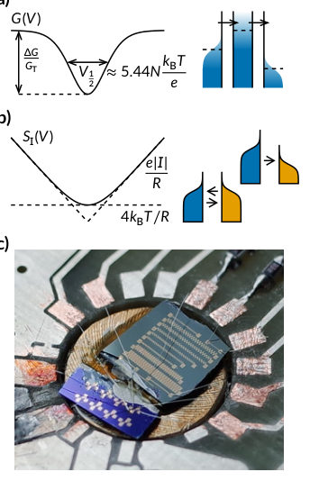
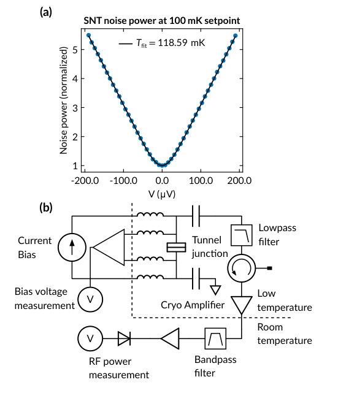
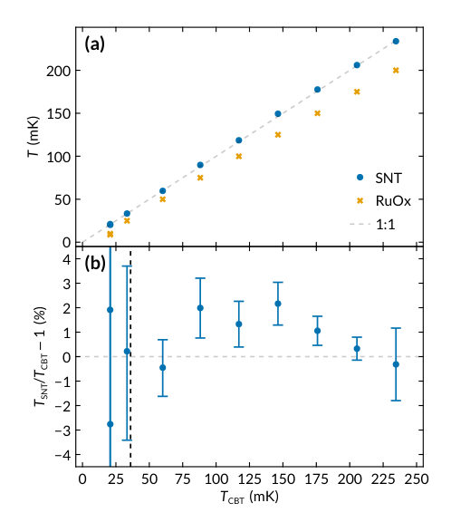
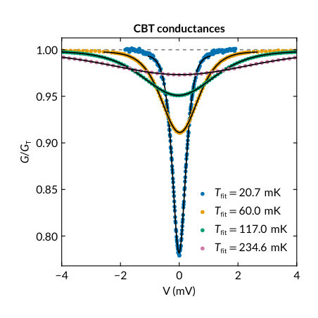
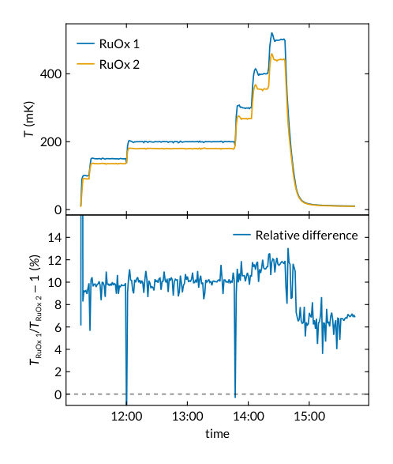
Summary. This paper experimentally compares two primary electronic thermometers, the Coulomb Blockade Thermometer (CBT) and the Shot Noise Thermometer (SNT), for use in the millikelvin regime. By measuring electrical properties like conductance and noise power, the authors demonstrate that both methods yield highly consistent temperature readings. This work provides a robust, fundamental-constant-based tool for precise temperature measurement in low-temperature quantum experiments.
Why it may be interesting. The development of highly accurate, fundamental-constant-based thermometers is crucial for any experiment requiring precise temperature control in the quantum regime, directly impacting measurements in quantum optics and many-body systems.
Main problem. The paper addresses the need for primary thermometry methods to replace the current temperature scale, especially in the very high and low temperature limits.
Main result. The Coulomb Blockade Thermometer (CBT) and the Shot Noise Thermometer (SNT) show good agreement (within 2.5%) when inter-compared in the 20 mK to 235 mK range.
Method. The authors experimentally compare two independent electronic thermometers, CBT and SNT, by measuring their respective electrical responses (conductance and noise power) as a function of bias voltage.
Model / system. The study utilizes quantum circuits involving Normal Metal-Insulator-Normal Metal (NIN) tunnel junctions. The CBT relies on the bias dependence of normalized conductance, while the SNT uses the symmetric current noise, both linking temperature directly to fundamental constants ($k_B, e$).
Key observables. Normalized conductance ($G/G_T$) for CBT and symmetric current noise power ($S_I$) for SNT.
Important parameters / regimes. Temperature range of 20 mK to 235 mK; fundamental constants $k_B$ and $e$.
Assumptions / limitations. The comparison assumes that the measurements are free from significant self-heating effects and that the SNT measurement uncertainty is dominated by the measurement bandwidth.
Figures summary. Figures illustrate the measured CBT conductance vs. bias voltage and SNT noise power vs. bias voltage, showing best-fit curves derived from theoretical models at specific temperatures.
Paper structure. The paper introduces the need for primary thermometry, details the theoretical basis and measurement techniques for CBT and SNT, presents the experimental comparison across a temperature range, and concludes by analyzing the agreement and sources of uncertainty.
Since the redefinition of the kelvin in 2019, new methods of primary thermometry have been considered to replace the currently agreed temperature scale in the very high and low temperature limits. These new methods should provide improved uncertainties and, most importantly, a more direct link to the definition of the kelvin. In the low temperature ranges it is possible to realize thermometers that do not require any known reference temperature or external calibration parameters. We present an experimental comparison of two such thermometers: the Coulomb Blockade Thermometer (CBT) and the Shot Noise Thermometer (SNT). Both thermometers measure temperature hinging only on the natural constants $k_\mathrm{B}$, and $e$. Furthermore both of them are based on electron tunneling current and, thereby, need only electrical measurements, enhancing the practicality. CBT and the SNT are inter-compared in a range of 20 mK to 235 mK. The results show that the agreement of SNT and CBT is approximately within 2.5 % in this range. Basic measurement uncertainty is analyzed and we show that uncertainty in the measurement frequency can cause significant error. to temperature measurement of the SNT at low temperatures where finite frequency plays a role.
Authors: Marcel Strohmeier, Andriy Smolyanyuk, Karsten Held, Michael Smidman, Geetha Balakrishnan, Wolfgang Belzig, Elke Scheer, Angelo Di Bernardo
Type: both · Category: other · PDF: https://arxiv.org/pdf/2606.04742v1
Analysis basis: full PDF text, analyzed in chunks
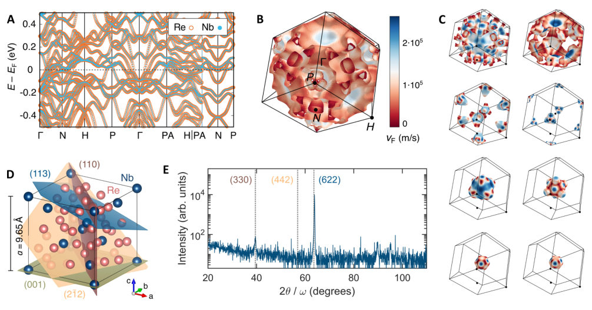
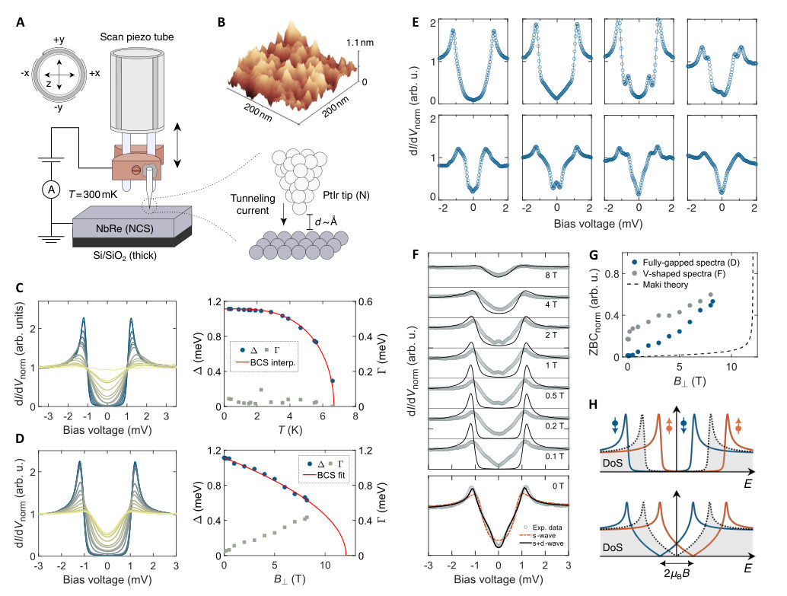
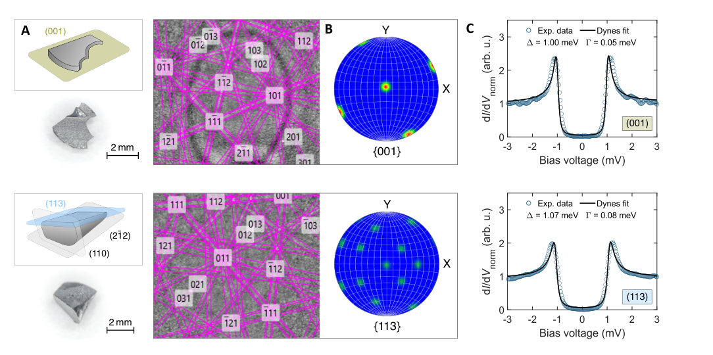
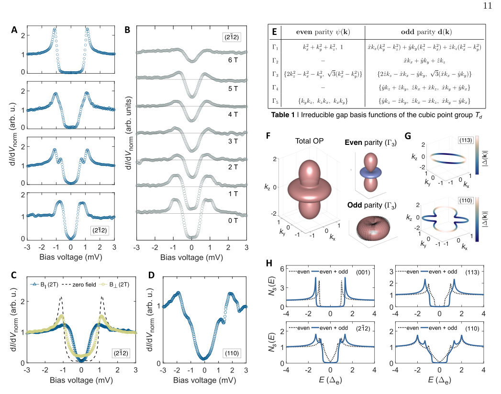
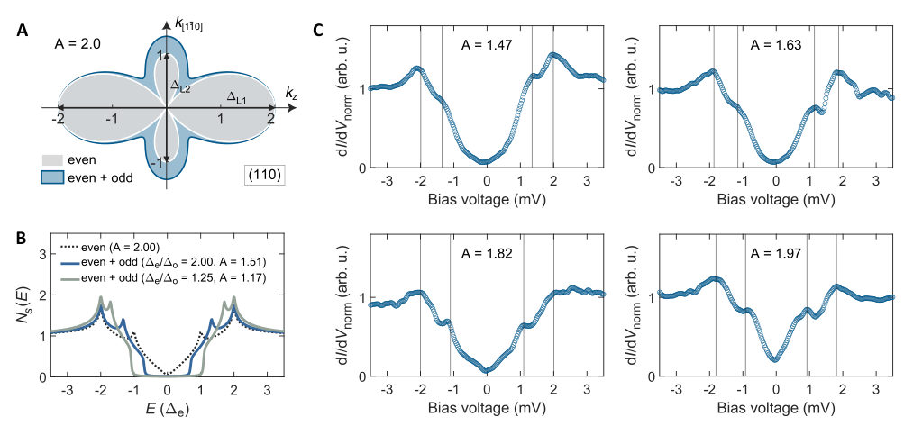
Summary. This work investigates the superconducting pairing symmetry in the noncentrosymmetric metal $ ext{Nb-Re}$ using orientation-dependent scanning tunneling spectroscopy. By analyzing the local density of states across multiple crystal faces, the authors demonstrate that the superconducting order parameter must be a mixture of spin-singlet and spin-triplet components. This resolves a long-standing debate by showing that ASOC alone is sufficient to induce significant triplet pairing, positioning $ ext{Nb-Re}$ as a platform for superconducting spintronics.
Why it may be interesting. The finding that ASOC alone drives mixed-parity superconductivity provides a clean, correlation-free mechanism for unconventional pairing, which is highly relevant for understanding pairing mechanisms in complex materials relevant to quantum devices.
Main problem. The central question addressed is whether antisymmetric spin-orbit coupling (ASOC) alone, without invoking strong electronic correlations, is sufficient to generate a measurable spin-triplet component in the superconducting order parameter of a noncentrosymmetric superconductor (NCS).
Main result. The study demonstrates that ASOC is sufficient to foster a sizable spin-triplet component in $ ext{Nb-Re}$, evidenced by orientation-dependent superconducting gap structures, reconciling conflicting literature reports.
Method. The research combines low-temperature scanning tunneling spectroscopy (STS) on single crystals with symmetry-constrained theoretical modeling of the superconducting order parameter.
Model / system. The system is $ ext{Nb}{18} ext{Re}$, a weakly-correlated noncentrosymmetric metal. The model incorporates a mixed-parity order parameter combining even-parity spin-singlet and odd-parity spin-triplet components.
Key observables. Orientation-dependent local density of states (DoS) measured via $dI/dV$, and the zero-bias conductance (ZBC) dependence on magnetic field.
Important parameters / regimes. The ratio of triplet to singlet amplitude ($\Delta_o/\Delta_e$), and the superconducting gap energy ($\Delta$).
Assumptions / limitations. The analysis assumes that the observed spectral features can be accurately modeled by a mixed-parity order parameter, and that the measured anisotropy is intrinsic to the pairing symmetry.
Figures summary. Figures show STM $dI/dV$ spectra on different crystal faces ((001), (212), (110)) exhibiting varying gap structures, and plots illustrating the required combination of singlet and triplet components to fit the full set of experimental data.
Paper structure. The paper establishes the theoretical framework for mixed-parity superconductivity in NCS, presents STS measurements across multiple crystal orientations, and uses a symmetry-constrained model to fit the observed anisotropic DoS, concluding that ASOC is the primary driver for triplet pairing.
In conventional superconductors, Cooper pairs form in an even-parity spin-singlet state. Noncentrosymmetric superconductors, which lack inversion symmetry, exhibit antisymmetric spin-orbit coupling (ASOC) that can combine even-parity spin-singlet and odd-parity spin-triplet pairs into a mixed-parity order parameter. Spin-triplet components are highly beneficial for superspintronic devices. Whether ASOC alone $-$ without strong electronic correlations $-$ is sufficient to generate a measurable triplet component remains a central open question. Here, we resolve this question in Nb$_{18}$Re$_{82}$ (Nb-Re), a weakly-correlated noncentrosymmetric metal whose superconducting pairing symmetry has been actively debated. Using low-temperature scanning tunneling spectroscopy on single crystals with four distinct crystallographic orientations, find a pronounced orientation-dependent anisotropy in the local density of states. Supported by a symmetry-constrained model, we show that the complete set of tunneling spectra requires a mixed-parity order parameter with the triplet amplitude reaching up to half of the singlet component. These results reconcile the conflicting reports in the literature on Nb-Re and demonstrate that ASOC is sufficient to foster a sizable spin-triplet component even without strong electronic correlations, suggesting that mixed-parity superconducting states may be more widespread than previously assumed. Since Nb-Re can be readily fabricated in thin-film form, these findings position it as an accessible platform for superspintronic devices and establish orientation-resolved tunneling spectroscopy as a general protocol for the detection of mixed-parity order parameters.
Authors: Paul Berezhnoy, Anna Elistratova, Zakhar Enbaev, Mikhail Dryazgov, Alexander Mumlyakov, Oleg Solovyev, Mikael Geodakyan, Igor Trofimov, Vasily Stolyarov, Alexander Korneev, Michael Tarkhov
Type: experiment · Category: other · PDF: https://arxiv.org/pdf/2606.04956v1
Analysis basis: full PDF text, analyzed in chunks
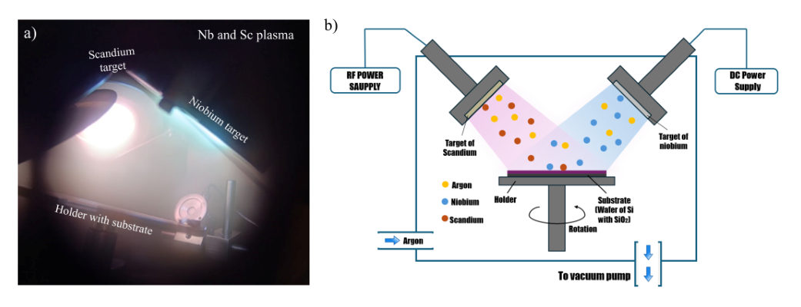
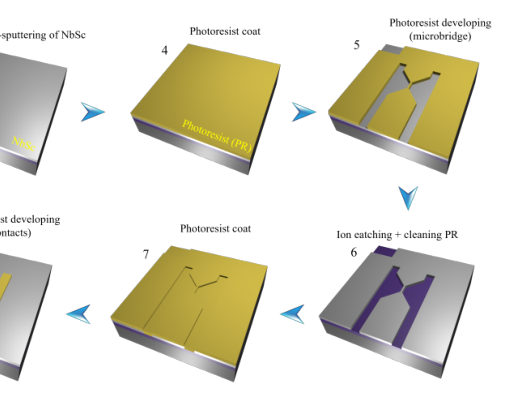
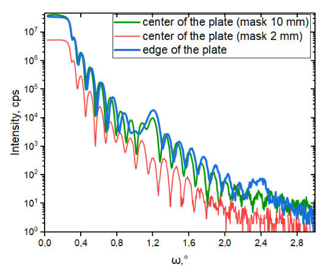
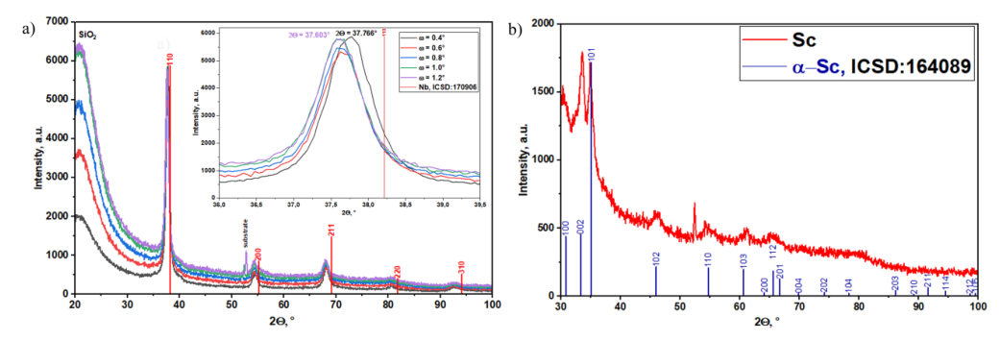
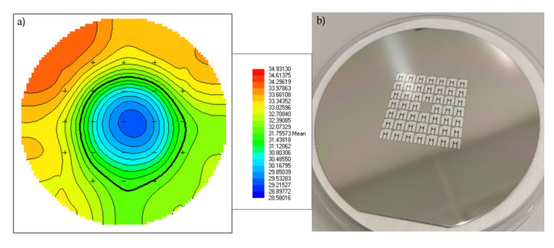
Summary. This paper reports on the successful synthesis and comprehensive characterization of superconducting $ ext{Nb}_{1-x} ext{Sc}_x$ thin films using magnetron co-sputtering. Key findings include a maximum critical temperature of 6.35 K and high critical current densities, demonstrating the material's promise for advanced functional cryogenic electronic devices.
Why it may be interesting. While primarily experimental, the detailed characterization of superconducting parameters ($T_c$, $H_{c2}$, $\xi_{GL}$) and the comparison to other superconducting materials (like $ ext{NbN}$) provide fundamental data relevant to understanding superconducting mechanisms in engineered thin films.
Main problem. The study focuses on synthesizing and characterizing the superconducting properties of $ ext{Nb}_{1-x} ext{Sc}_x$ intermetallic thin films.
Main result. The synthesized $ ext{Nb}_{1-x} ext{Sc}_x$ film exhibits superconductivity with a maximum critical temperature ($T_c$) of 6.35 K and a high critical current density ($J_c$) up to $2.5 ext{ MA/cm}^2$.
Method. The research employed magnetron co-sputtering for film deposition, followed by structural characterization using XRD/XRR and electrical measurements (transport and magnetic) to probe superconducting parameters.
Model / system. The physical system is the $ ext{Nb}_{1-x} ext{Sc}_x$ intermetallic compound thin film, which is analyzed as a superconducting material suitable for cryogenic electronics.
Key observables. Critical temperature ($T_c$), critical current density ($J_c$), upper critical field ($H_{c2}$), electron diffusion coefficient ($D$), and coherence length ($\xi_{GL}$).
Important parameters / regimes. Maximum $T_c$ of 6.35 K at $\approx 15\% ext{ Sc}$; $J_c$ up to $2.5 ext{ MA/cm}^2$; $H_{c2}(0) = 3.2 ext{ T}$.
Assumptions / limitations. The systematic shifts in diffraction angles suggest a substitutional solid solution or metastable phase, while depth profiling suggests the lattice parameter shifts are due to strain rather than composition gradients.
Figures summary. Figures show the co-sputtering process, microbridge fabrication, XRR curves indicating thickness non-uniformity, and GIXRD patterns demonstrating peak shifts dependent on the incidence angle.
Paper structure. The paper details the synthesis process, structural characterization (XRD/XRR/AES), and comprehensive superconducting property measurements ($T_c$, $J_c$, $H_{c2}$, etc.) on samples with varying Sc concentrations.
The technology has been developed for synthesizing Nb$_{1-x}$Sc$_x$ films using magnetron co-sputtering from Nb and Sc targets. The material synthesis was accompanied by structural characterization using X-ray diffraction and X-ray reflectometry methods, which enabled the determination of thickness, phase composition and crystal structure. We also analyzed the superconducting properties. The critical temperature $T_c$ was measured for samples with different concentarions of Sc and Nb. The maximum value of $T_c$ equal to 6.35 K was observed for sample with a scandium content of approximately 15 %, which was determined by Auger spectroscopy. Transport and magnetoresistive measurements were performed in microbridges with length of 50 $μ$m, width of 2 $μ$m, and thickness of 30 nm. The critical current density was as high as 2.5 $\text{ MA/cm}^{2}$. Magnetic measurements were performed with the field oriented perpendicular to the sample. The upper critical field $H_{c2}(0) = 3.2$ T, electron diffusion coefficient $D = 1.1$ $\text{cm}^{2}/s$, and coherence length $ξ_{GL} = 10.1$ nm. The synthesized Nb$_{1-x}$Sc$_x$ intermetallic compound shows promise for various functional cryogenic electronics devices. \keywords{NbSc; superconductor; microbridge}
Authors: Jakkapat Seeyangnok, Udomsilp Pinsook, Graeme J. Ackland
Type: theory · Category: other · PDF: https://arxiv.org/pdf/2606.04954v1
Analysis basis: full PDF text, analyzed in chunks
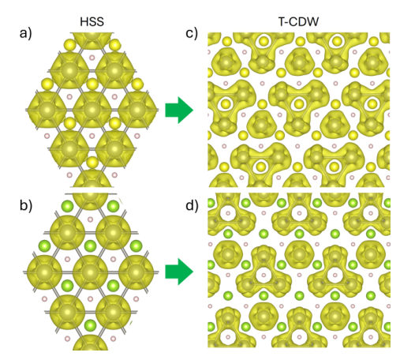
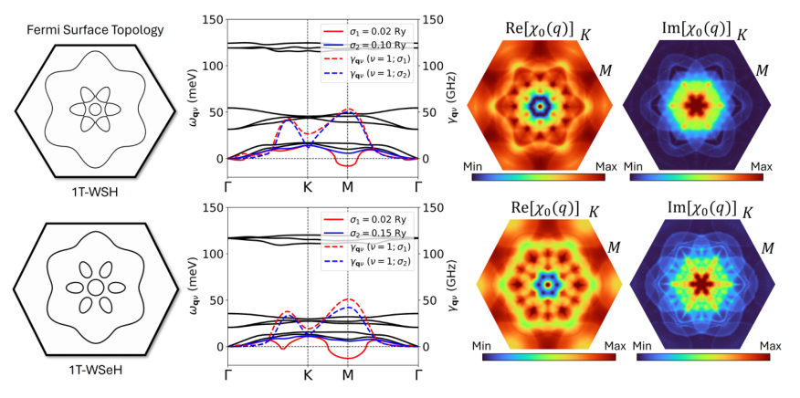
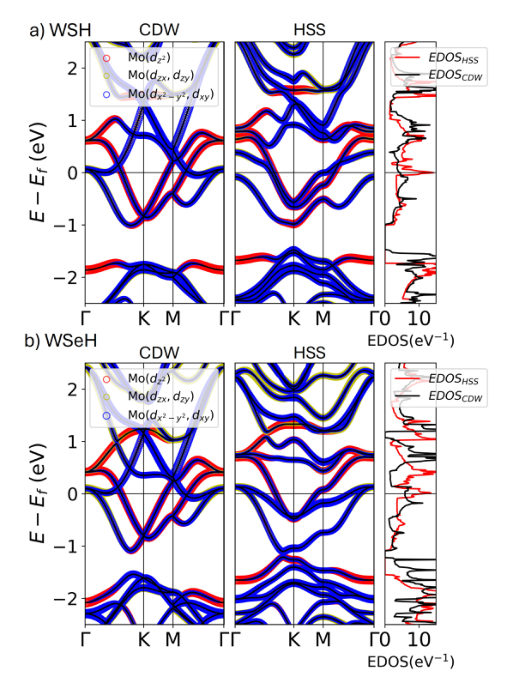
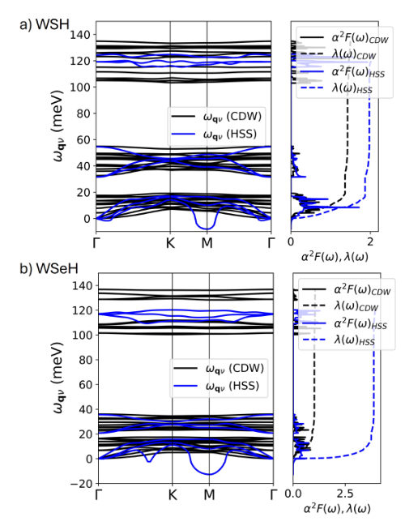
Summary. This work uses first-principles calculations to examine how Charge-Density-Wave (T-CDW) formation stabilizes Janus chalcogenide hydrides. The T-CDW transition is found to stabilize the lattice by renormalizing the electron-phonon coupling strength. Crucially, this stabilization mechanism does not destroy superconductivity, allowing for robust phonon-mediated superconductivity to persist.
Why it may be interesting. The concept of a CDW transition acting as a self-stabilizing mechanism that preserves superconductivity, rather than destroying it, presents a novel coupling between lattice dynamics and pairing mechanisms relevant to strongly correlated superconductors.
Main problem. The study investigates the role of Charge-Density-Wave (CDW) formation in stabilizing lattice structures and understanding its interplay with superconductivity in hydrogenated Janus Group-VI Chalcogenide Hydrides.
Main result. The T-CDW phase acts as an intrinsic self-stabilizing mechanism by renormalizing the electron-phonon coupling (EPC) strength, thereby relieving excessive lattice instability while preserving robust phonon-mediated superconductivity.
Method. The research employs first-principles calculations using DFT/DFPT to analyze phonon softening, electronic susceptibility, and EPC constants.
Model / system. The system under study consists of Janus transition-metal chalcogenide hydrides, specifically 1T-WSH and 1T-WSeH, which are analyzed in both high-symmetry and T-CDW distorted phases.
Key observables. Phonon softening at the M point, T-CDW pattern, renormalization of EPC constant (lambda), and superconducting transition temperatures (Tc).
Important parameters / regimes. The EPC constant ($\lambda$) changes significantly upon transition (e.g., 2.04 $ o$ 1.50 in WSH), and predicted $T_c$ values are 12.28 K and 7.75 K.
Assumptions / limitations. The instability is driven by strong momentum-dependent EPC, not conventional Fermi-surface nesting, and the mechanism is proposed to be universal for the 1T-MCH family.
Figures summary. Figures illustrate structural reconstruction and local density modulation in the T-CDW state, alongside phonon dispersions and electronic susceptibility showing the electronic origin of the soft mode.
Paper structure. The paper first establishes the instability via phonon softening in the high-symmetry phase, then analyzes the T-CDW formation driven by EPC, demonstrating electronic reconstruction, and finally concludes that this process stabilizes the lattice while maintaining superconductivity.
Hydrogenation is an effective strategy for enhancing electron--phonon coupling (EPC) and superconductivity in two-dimensional materials. However, excessively strong EPC can also induce lattice instabilities, leading to charge-density-wave (CDW) formation and structural phase transitions. Here, using first-principles calculations, we investigate CDW order in the Janus transition-metal chalcogenide hydrides 1T-WSH and 1T-WSeH. We find that the high-symmetry phases exhibit pronounced phonon softening at the M point, driving a transition to a commensurate $2\times2$ distorted structure characterized by an emergent triangular charge-density-wave (T-CDW) pattern. Analysis of the electronic structure, susceptibility, and phonon spectrum reveals that the instability is not driven by conventional Fermi-surface nesting but originates from strong momentum-dependent EPC. The T-CDW transition reconstructs the electronic structure and reduces the density of states at the Fermi level, leading to a substantial renormalization of the EPC strength. Consequently, the electron--phonon coupling constants decrease from $λ=2.04$ to $1.50$ in 1T-WSH and from $λ=3.94$ to $1.06$ in 1T-WSeH, while superconductivity remains robust in CDW phase with predicted transition temperatures of $T_c=12.28$ K and $7.75$ K, respectively. Together with previous results for MoSH and MoSeH, our findings establish a universal mechanism in the 1T-$MCH$ family ($M=\mathrm{Mo},\mathrm{W}$ and $C=\mathrm{S},\mathrm{Se}$), where the primary role of the T-CDW phase is not to eliminate superconductivity but to stabilize the lattice through EPC renormalization. The T-CDW phase therefore acts as an intrinsic self-stabilizing response that relieves excessively strong EPC while preserving phonon-mediated superconductivity.